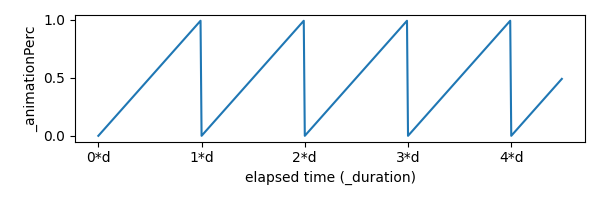
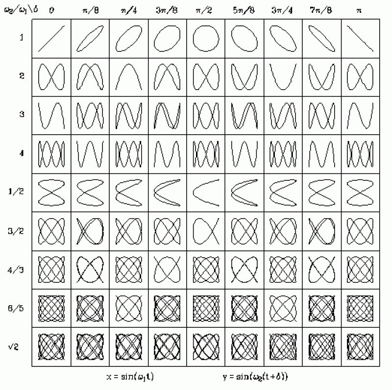

import matplotlib
matplotlib.use('Agg')
import matplotlib.pyplot as plt
import numpy as np
path = "../images/procedural_anim/"
def savePlt(filename):
plt.savefig(path + filename)
return path+filename # return this to org-mode
Intro
In this second section, I wanted to talk about functions… And how to take simple movements and build more complex animations from them. Be warned: Here be graphs.
We'll be using the idea of State, Update, Apply from Part 1 here too. If you haven't read that, you might want to start there! [./procedural-animation-1-state-machines/][Part 1]] here too. If
And finally, all of the animations are running in javascript canvas, so you can open the source code in the inspector or find it on my github for the site!
Bouncing ball
How to make this?
Anim 1: Moving the ball
For the State, we can just have a single number that varies from 0 to 1: The percentage through the animation we are so far.
This means our Update can turn the elapsed time into a percentage value and add it to the State.
And our Apply can move the ball based on the state variables, and draw it. For this, we only need to change the y coordinate:
y = state*k, where k a scaling value for how far the ball moves.
In code this looks like:
// CONFIG:
// 'scale in time', length of animation
const float _duration = 5.0f;
// 'scale in space', distance ball moves
const float _dist = 40.0f;
// 'offset in space'
const Vector2 _offset = new Vector2(..);
// STATE:
float _animationPerc = 0;
void Update(float dt) { // dt is the change in time.
// UPDATE state:
_animationPerc = (_animationPerc + dt/_duration) % 1;
// 1_|
// | /| /| /| /|....
// 0_|/ |/ |/ |/ |
// APPLY
ball.y = _offset.y + _animationPerc * _dist;
}
The update line can be a bit confusing, but might make more sense when split up a bit more.
_animationPerc = (_animationPerc + dt/_duration) % 1;
// Equilivent to (all of):
// The change in how far we are through the animation.
float dPerc = dt / _duration;
// Added to _animationPerc
_animationPerc += dPerc;
// And wrap back to 0 if we're > 1;
if (_animationPerc >= 1)
_animationPerc -= 1;
We're working out how much further we are through the animation (```dPerc```) which is our change it time divided by the duration of the animation. Say our animation is 2 seconds long, and 1 second just elapsed… We're now half-way further through than before.
It might be helpful to think of the shape this variable (or all variables) make over time. A lot of these animations can be thought of as the Apply function reshaping the State variables.

Figure 1: The shape of _animationPerc over time, where d is the duration of the animation, makes a sawtooth shape.
In this example, our Apply function just scales the State by _dist. This is then the y offset of the ball for that frame, as shown in the animation above.
Figure 2: Here, the input State (Blue), is scaled to give the ball's positional offset by the Apply function (Orange).
Different Applications (heh)
By just changing the Apply function here, we can get a variety of different movements. We can think of these movements as transformations of the origional State graph, since this is the only input.
First lets move the ball up and down in wave like this…
Anim 2: Wavey ball
Here, since \(sin(x)\) has a period of \(2*\pi\), we need to scale our state variable by that so it loops properly.
Figure 3: Our state (Blue) compared to the wavey output of the ball (Orange) (Not to scale).
In code, this is as easy as:
// APPLY
ball.y = sin(2 * Math.PI * _animationPerc);
By doing this to both the x and y axis at the same time, offset by a bit, we can get a circle!
Anim 3: Circles
Which, again, in code is just:
// APPLY
ball.x = sin(2 * Math.PI * _animationPerc);
ball.y = cos(2 * Math.PI * _animationPerc);
// NOTE Equilivent to: ball.y = sin(2 * Math.PI * _animationPerc + Math.PI);
This idea can be taken much further, and leads to some really cool movements! The Lissajous Curves are created when you scale the x and y parts differently in a way very similar to above ^. That's a whole different blog post though!

Figure 4: The different shapes that can be made by scaling the inputs to sin/cos into different ratios. If these were animated like the ball above, the ball would follow the shape.
Zigzag
This is a slighly harder example for the idea of manipulating function shapes.
We start off with our input shape as before… And keeping in mind our goal output shape (to get the animation above).
Figure 5: Input _animationPerc (Blue), compared to the shape we need (Orange).
We can perform several steps to transform it into the right shape… Scaling it up by 2 and moving it down by 1 (Orange). Then we can take the absolute value of this (Green).
Figure 6: Input (Blue), scaled & transformed (Orange), result (Green)
// APPLY
float zigzag = Mathf.Abs(2*_animationPerc - 1);
ball.y = zigzag * _dist;
Bouncing balls
In order to create a realistic bounce, we have to first construct the right shape function again. Without delving into the physics of it, we're looking for a Parabola: Some function of \(t^2\).
Figure 7: Input (Blue), vs bounce shape (Orange)
Interestingly, we can get this shape from our zigzag before, by applying an extra transformation: 1-zigzag2.
Anim 5: Bouncing balls
// APPLY
float zigzag = Mathf.Abs(2*_animationPerc - 1);
ball.y = (1-zigzag*zigzag) * _dist;
More Ideas
We can clamp zigzag so it's 1 for some time, which means the ball will sit on the ground for a bit… By animating the scaling too, maybe this could be an animation for a slime NPC?
Figure 8: Basic zigzag curve (Blue), zigzag/0.8 and clamped between 0 and 1 (Orange), and finally the output shape - bouncing ball with a pause (Green).
And how it looks animated…
Anim 6: Bouncing balls
And also we can have loads of balls by just adding an offset for the State value to each one! With some polish this could maybe make a kind of snake creature for a game…
Anim 7: Bouncing balls
Other applications
While here, I've only done animations by moving things, it's also possible to animate rotations, shaders, skeletons, and more with exactly the same ideas.
Tune in for part 3 when I'll cover a more complicated idea: Using gradient descent for solving constraints in procedural animation (but with fun interactive animations!!).